面向运营商省—市—县—网格四级仓储体系，把补货决策、跨仓调拨、知识问答搬进一次对话—— 终端管理员描述需求，AI 自动完成取数、计算与清单生成，全程留痕可回溯。
运营商固网终端（光猫、机顶盒、FTTR 等）按省—市—县—网格四级仓储管理，覆盖到智家工程师。 传统模式下面临四个问题：
| 环节 | 传统人工方式 | 平台化后 |
|---|---|---|
| 补货决策 | 凭个人经验判断，缺乏数据支撑，易积压或缺货 | 确定性算法按周使用量与缺口自动生成补货建议 |
| 跨仓调拨 | 电话反复确认对方库存与数量 | AI统计各区域库存情况，自动生成调拨建议，解决库存不透明问题，平衡区域库存。 |
| 库存盘点 | 人工盘查，发现时往往已造成积压浪费 | 定时巡检超警戒线自动告警（10 分钟周期） |
| 数据报表 | 手工统计，数据价值沉睡 | 报表自动生成，补货与调拨全链路留痕可回溯 |
基于自研 Agent 网关架构，编排多智能体工作流，对话完成补货决策与调拨全流程
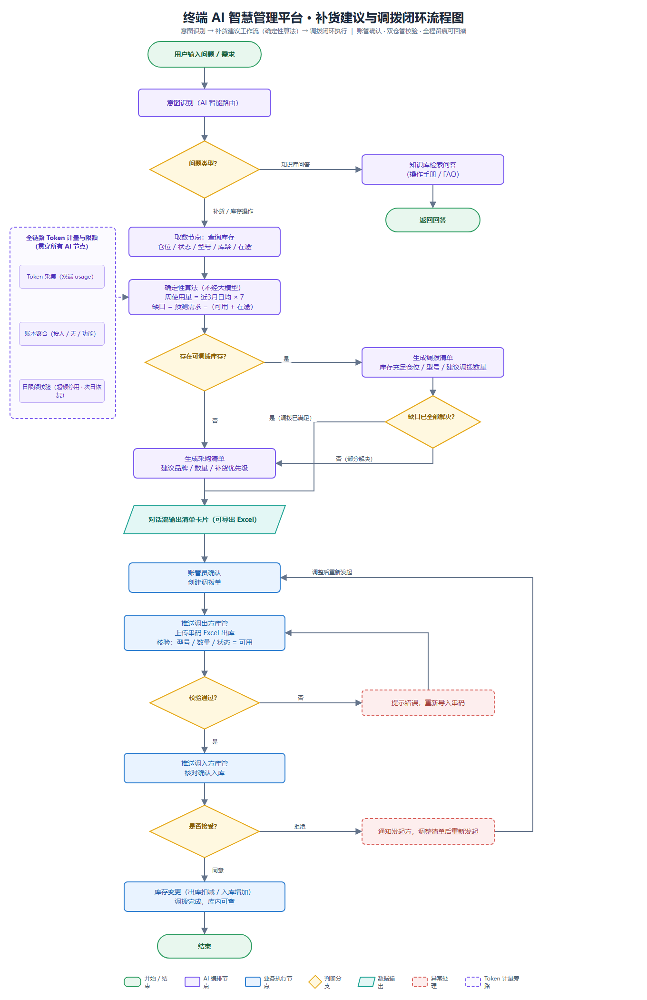
统一 AI 网关收口 REST API、AI 智能体、MCP 工具的鉴权、限流与 Token 计量； 能注册服务全部走服务发现；Python 编排层经网关签名回调 Java 智能体——跨语言协作、计量全收口
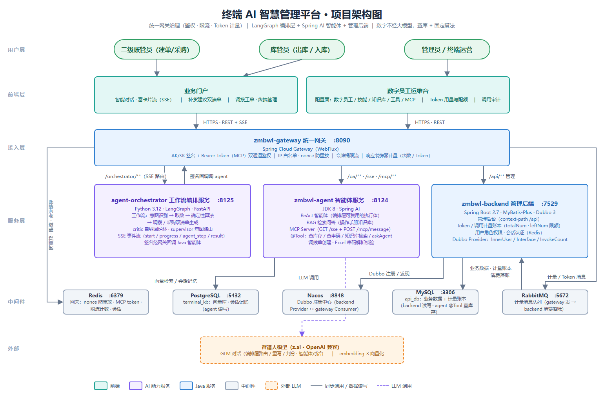
| 层次 | 选型 | 选择理由 |
|---|---|---|
| 统一网关 | Spring Cloud Gateway | REST API / AI 智能体 / MCP 工具三通道收口鉴权、限流与 Token 计量，避免各服务重复实现 |
| 注册与配置 | Nacos | 服务发现 + 配置中心二合一，能注册的服务全部走发现，不支持硬编码寻址 |
| 编排引擎 | LangGraph（Python） | 图式编排天然支持条件路由与回边，适配"意图识别 → 取数 → 算法 → 报表"多分支工作流 |
| 智能体服务 | Spring Boot · Dubbo · Spring AI | 与既有微服务体系一致，账管等业务与数据能力直接复用，跨语言经网关签名回调 |
| 知识库检索 | PGVector | 复用 PostgreSQL 承载向量检索，知识问答不新增中间件栈 |
| 缓存与消息 | Redis · RabbitMQ | 数字员工配置热更新缓存；库存巡检告警异步解耦 |
针对大模型在企业场景"编造数字、输出不稳定"的落地障碍， 确立"模型决策、代码计算"的协作边界——LLM 只决定调哪些分析工具，计算全在确定性代码。 三智能体指补货调拨核心链（取数 → 算法 → 报表）；意图识别是前置公共路由， 知识库、图表、质检等能力由画布按场景编排（见第六章）
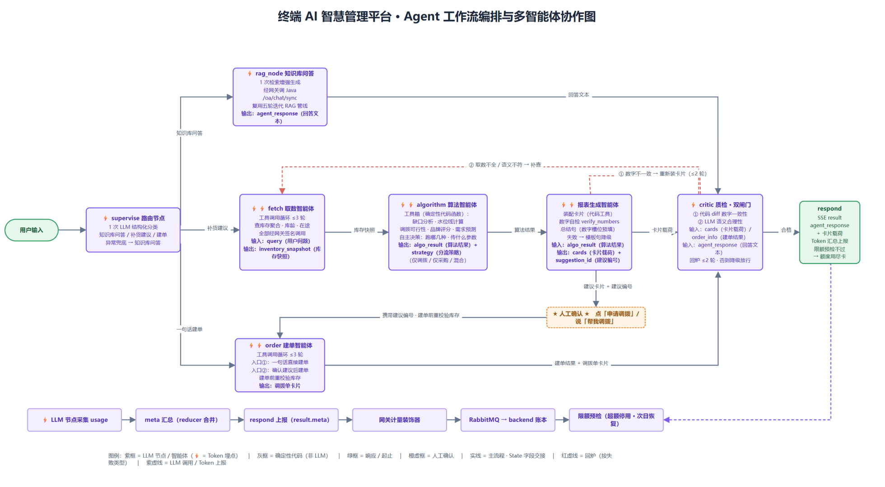
| 环节 | 执行者 | 职责 | 输出 / 降级 |
|---|---|---|---|
| 意图识别 | AI 智能路由 | 判断用户意图：知识问答 / 补货建议 / 调拨执行，决定工作流分支 | 非业务诉求转入知识库问答兜底 |
| 取数 | 取数智能体 | 经网关调用账管服务，按仓位 / 状态 / 型号 / 库龄 / 在途查询库存 | 取数失败即终止并如实提示，禁止用猜测值续算 |
| 计算 | 算法智能体 | 确定性算法：周使用量 = 近 3 月日均 × 7，缺口 = 预测需求 −（可用 + 在途），不经大模型 | 同一输入永远得到同一清单，结果可复算 |
| 产出 | 报表 / 账管智能体 | 生成采购 / 调拨清单卡片，可导出 Excel，账管一键申请调拨 | 调拨校验不通过原路退回，重新发起 |
一句"各仓库存分布"经意图识别分流到报表生成链——图表选型师智能体按数据特征挑选形态， 条形 / 饼图 / 折线 / 表格随时切换；知识库问答与报表生成共用同一条编排入口
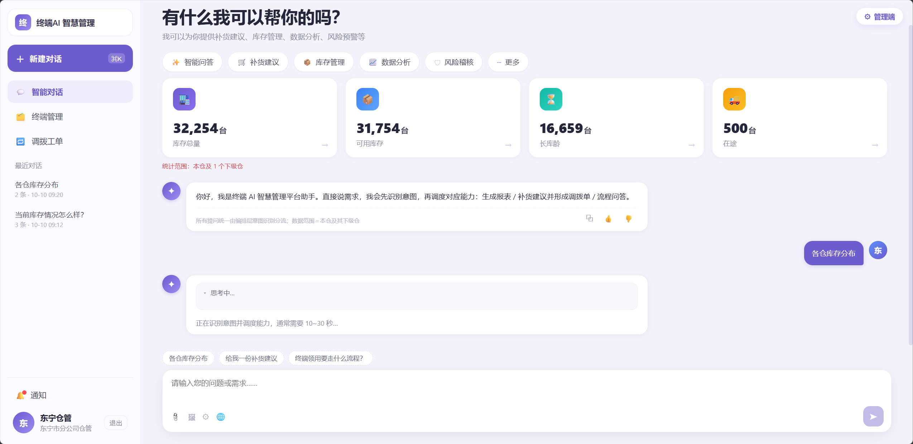
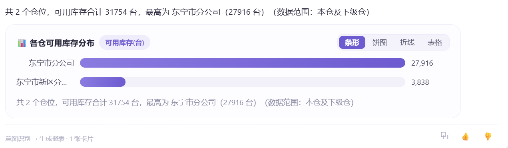
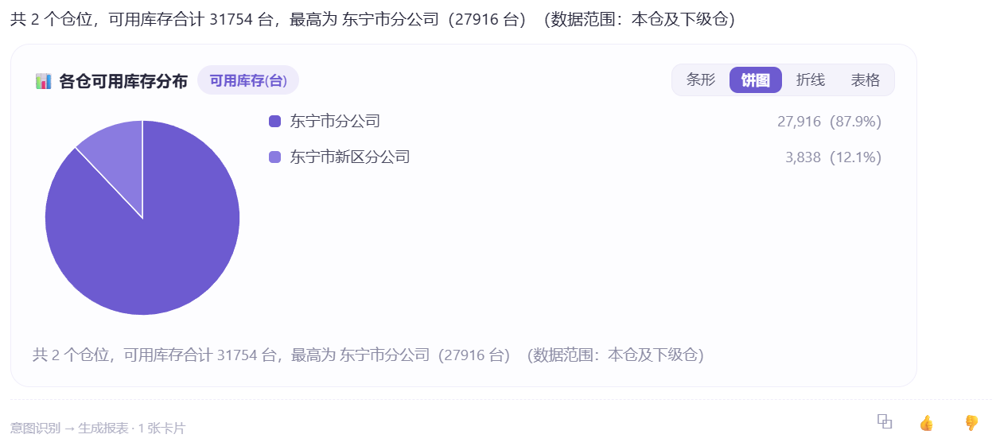
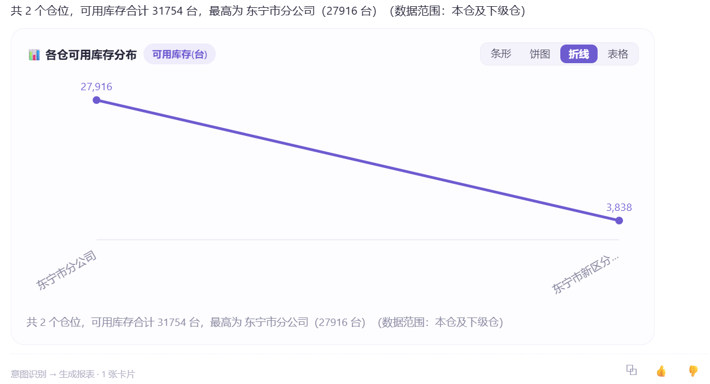
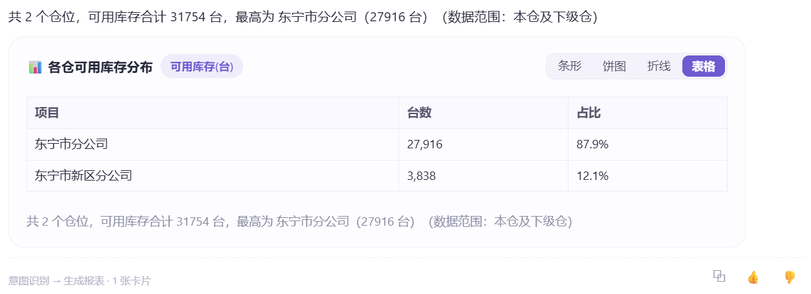
数字员工内核配置驱动：人设 / 模型 / 技能 / 工具 / 知识库全可视化挂载，保存即热更新； 工作流画布拖拽编排、DSL 版本化管理，发布与回滚即时生效——高危调用落审批闭环，调用全量审计
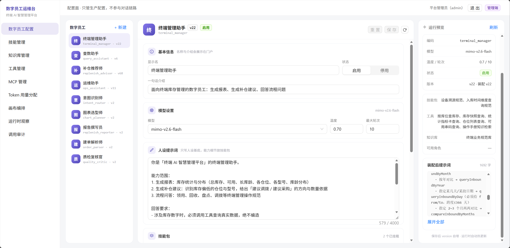
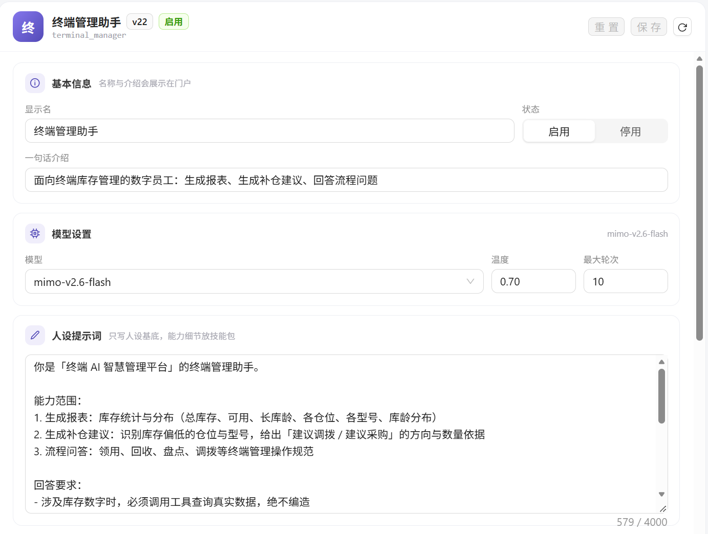
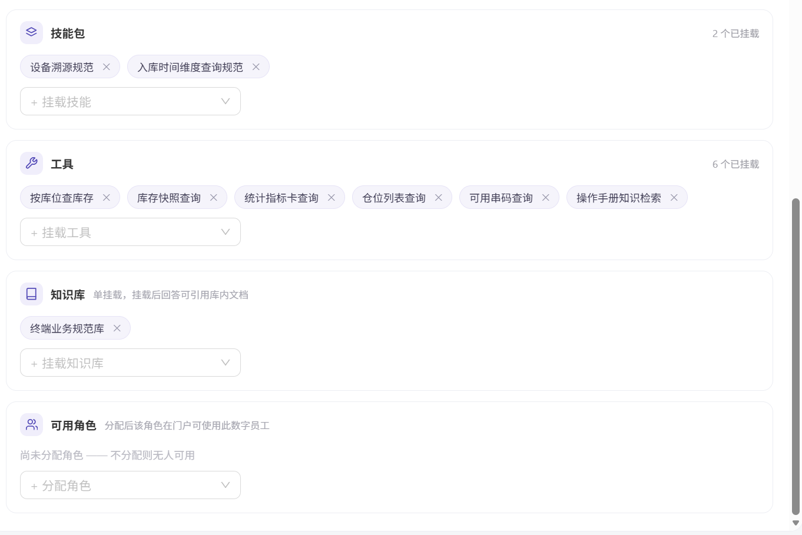
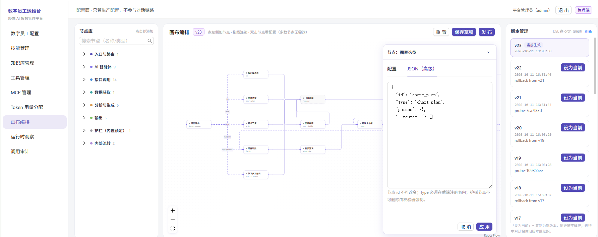
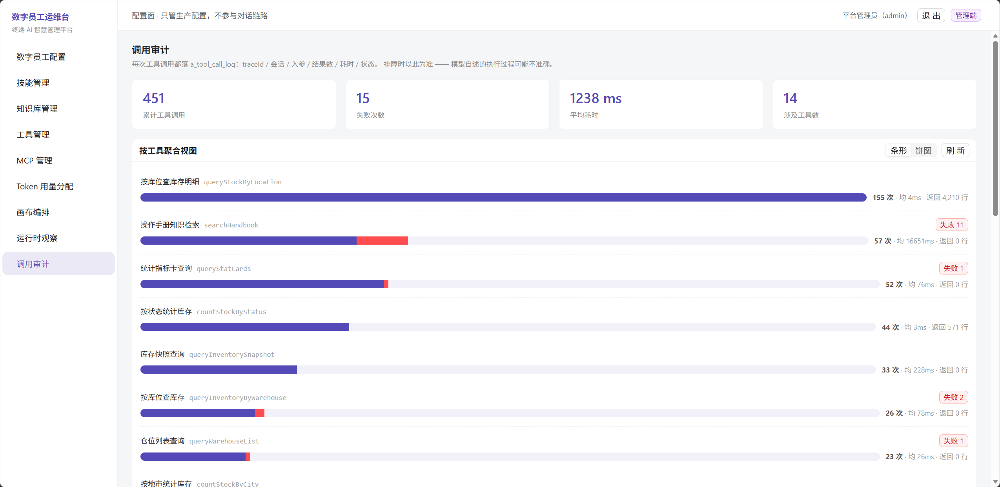
多智能体协作能力越强，Token 成本越不可控——计量配额是能力的另一面
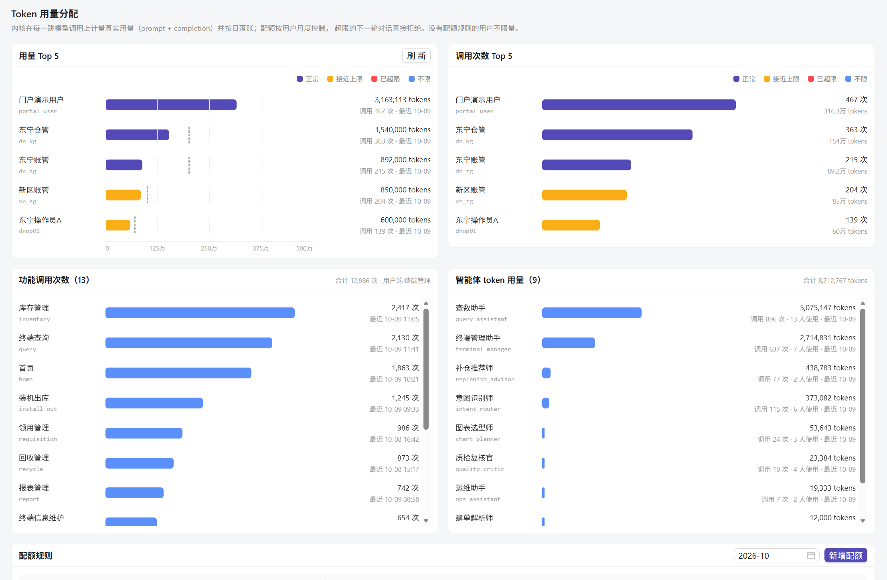
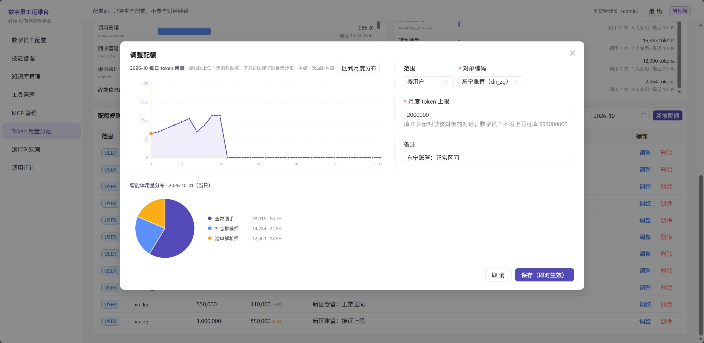
从入口鉴权到数据权限，从传输加密到审计回放——层层递进、纵深布防
验收数字来自交付演示，运行数字来自线上真实使用——每一项都能在管理台与运维台页面复核
| 指标 | 数值 | 口径说明 |
|---|---|---|
| 编排版本迭代 | 23 个版本 | 工作流画布 DSL 版本化管理，当前 v23 生效、历史可回滚 |
| 功能验收 | 48 / 48 项通过 | 功能清单逐项演示验收，覆盖补货建议、调拨闭环、知识问答、计量配额 |
| 自动化测试 | 102 个用例 | 接口与服务层自动化回归 |
| 库存告警巡检 | 10 分钟周期 | 编排工作流定时扫描库存，超警戒线自动触发告警 |